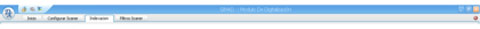
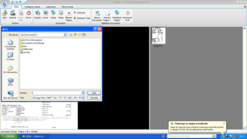
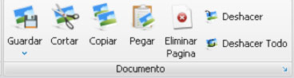
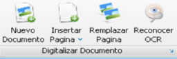
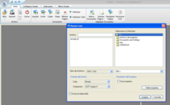
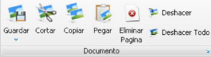
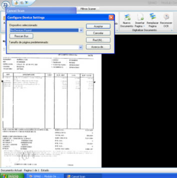
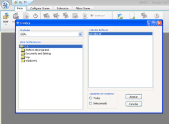

| Seleccione el tema sobre el que necesita ayuda. |
| Inicio |
| SIMADIG 1.0 Ventana Principal |
La Ventana Principal del Sistema SIMADIG 1.0 nos ofrece un entorno visual agradable y estratégicamente diseñado para que sea de un fácil manejo ofreciéndonos menús contextuales y botones de acceso a cada una de sus herramientas.
 Miremos como está dividida la ventana principal de la aplicación:
Miremos como está dividida la ventana principal de la aplicación:
- Barra de Titulo: Es la primera barra que se visualiza en la parte superior de la ventana principal del Sistema SIMADIG 1.0, está dividida en dos partes:
- Titulo de la Ventana: Como su nombre lo dice nos muestra el titulo de la Aplicación y se encuentra al principio de la Barra.
- Botones de Control: Ya usted los conoce son los botones de Minimizar Restaurar (Maximizar) y Cerrar.

- Barra de Menús: En esta Barra encontraremos todas las herramientas necesarias para trabajar con la aplicación.
Los menus que se encuentran en esta barra son:
Menu Archivo
- Abrir: Se utiliza para abrir un documento previamente digitalizado, si hacemos click sobre esta opción nos muestra la siguiente pantalla, donde podemos elegir el archivo que deseamos abrir.
- Imprimir: Imprime los documentos previamente Digitalizados.
- Cerrar: Cierra el documento que se encuentra en ejecución

Menu Documento
Con este menú podemos editar las imágenes digitalizadas, cortándolas copiándolas pegándolas o eliminar la página actual.

Menu Digitalizar Documento
Despliega las opciones de crear nuevo documento de digitalizacion, insertar páginas de otros archivos, reemplazar páginas y aplicar OCR al archivo digitalizado.

- Nuevo Documento: Solicita ingresar el nombre de la imagen asignado al documento a digitalizar.

- Insertar Página: Permite seleccionar el origen de la inserción de imágenes, tomado desde un archivo, el portapapeles, ó el scaner, incorporando las paginas que conforman la importación al archivo actual.

- Reemplazar Página: Reemplaza la imagen actual por la imagen resultante del proceso de digitalización a ejecutar.

- Reconocer OCR : El sistema permite realizar OCR a un documento digitalizado, deberá escoger el archivo para aplicar el OCR en la ubicación del directorio donde se encuentra el archivo.
